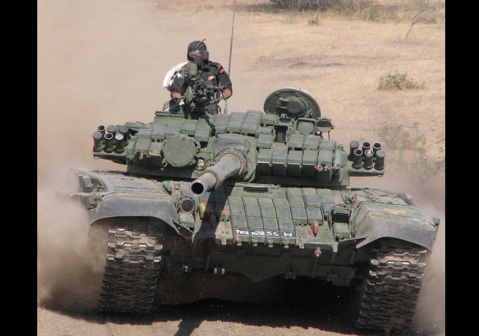
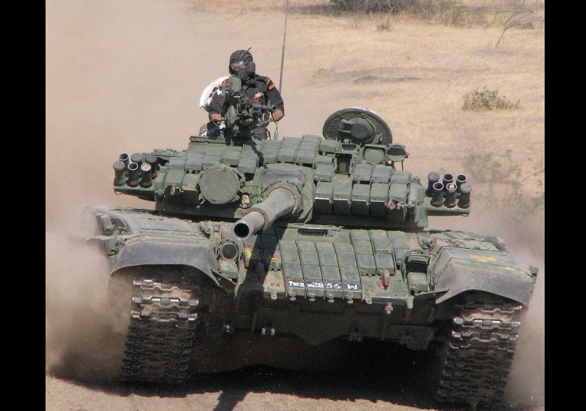
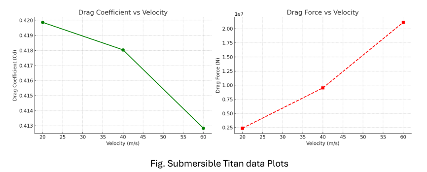

SIDHARTH SUNDAR
Mechanical Engineering Student | NIT Puducherry
EV Technology Student
Design & Simulation (Automotive Focus)
Vehicle Dynamics Modeling & Simulation
If it moves, I model it, simulate it, and make it smarter—welcome to my personal website.
Start Exploring
Who I Am?
A curious problem-solver driven by the mechanics of how things work, from complex machinery to elegant code.
Mechanical Engineering Student
EV Technology Student
Design & Simulation (Automotive Focus)
Vehicle Dynamics Modeling & Simulation
My Story
My journey into engineering began with a deep curiosity about how things work. Since childhood, I've been the kind of person who takes things apart just to see what's inside and understand their mechanisms. This natural curiosity led me to engineering, where I could explore the principles of design, motion, and energy in a structured way.
At the National Institute of Technology, Puducherry, I've transformed this interest into real-world projects, particularly in vehicle design, dynamics, and fluid flow analysis. I enjoy the challenge of turning concepts into working simulations. Each project follows a cycle of learning, applying, and refining—an-approach that has developed my patience, focus, and analytical thinking.
Beyond academics, I'm passionate about automotive styling and aerodynamics. I often sketch vehicle silhouettes and concept designs, exploring how aesthetics and performance can merge to create designs that are both visually appealing and functionally efficient. This hobby keeps me connected to the creative side of engineering while reinforcing my technical understanding.
Core Strengths
Curiosity & Problem-Solving
I thrive on exploring complex problems to find logical and best solution
Adaptability
Quick to learn new technologies and methodologies to meet the project demands.
Teamwork
I enjoy collaborating in team environments, believing that shared knowledge leads to better outcomes.
Languages
My Academic Journey
Each step in my education has built upon the last, shaping my skills and passion for engineering. Click any stage to read the full story.
B.Tech in Mechanical Engineering
National Institute of Technology, Puducherry
My current degree at a National Institute of Technology is where my passion for engineering is turning into professional skill. Here, I'm specializing in Electrical Vehicle as a Minor Course long with my main course.
My time at NIT Puducherry has been a highly practical learning experience. The coursework has given me a strong understanding of core mechanical subjects suchs as vehicle design, dynamics, and fluid mechanics. Alongside theory, I have gained hands-on exposure to industry-standard tools, using NX CAD for design and ANSYS for simulation and analysis. This practical approach has made classroom concepts more relevant and has strengthened my ability to apply them to real engineering challenges.
What makes my journey here more interesting and fascinating is my Minor in Electric Vehicle Technology. This specialization introduced me to emerging areas like battery systems, hybrid powertrains, and electric motors, aligning directly with the future of the automotive industry. I have also gained practical experience with MATLAB Simulink for vehicle dynamics and motor design. The combination of mechanical engineering fundamentals and EV-specific knowledge has prepared me with the skills and confidence to contribute to designing and developing the next generation of advanced vehicles.
Class 12 (CBSE Board)
Vivekananda Kendra Vidyalaya,Lamba Line, Port Blair
This was a challenging yet rewarding phase, where fundamental principles in science strengthened my skills and prepared me for engineering studies.
My Class 12 years with Physics, Chemistry, and Mathematics taught me how to think logically and solve problems step by step. The lab work helped me understand concepts better and showed me how theory connects to real applications. This experience built my confidence in handling complex problems and gave me the solid foundation I needed to succeed in engineering.
Class 10 (CBSE Board)
Vivekananda Kendra Vidyalaya,Lamba Line, Port Blair
This was where I first discovered my interest in science and mathematics.
During Class 10, I enjoyed learning about different subjects, but physics and math stood out to me the most. I found myself curious about how machines work and why things move the way they do. The problem-solving in mathematics felt satisfying, and this is when I first thought about pursuing something technical in the future.
Experience
Internship - "Project Trainee" at Heavy Vehicles Factory (HVF), Avadi
Step inside one of India’s most vital defense manufacturing units and explore how I applied my skills to a real-world autonomous systems project.
About the Organization
Heavy Vehicles Factory (HVF), Avadi, is a cornerstone of India's defense manufacturing sector. Established in 1961 and now operating under Armoured Vehicles Nigam Limited (AVNL), HVF is central to producing and maintaining India's fleet of armored combat vehicles.
Major Platforms Manufactured:
HVF is responsible for producing some of the most advanced armored vehicles in India's defense arsenal:
- Arjun MBT: India's indigenous third-generation main battle tank.
- T-90 Bhishma: A license-built adaptation of the modern Russian T-90.
- T-72 Ajeya: Upgraded variants forming the backbone of India's armored corps.
- Combat Engineering Vehicles: Including Bridge Layer Tanks (BLTs) and Armoured Recovery Vehicles (ARVs).

 


The Project: Autonomous JetTank

Internship Experience at Heavy Vehicles Factory, Avadi
Exploring Defense Manufacturing
My internship at Heavy Vehicles Factory (HVF), Avadi, was a comprehensive learning experience that gave me exposure to both large-scale defense manufacturing and hands-on robotics development. The internship was structured in two main parts: detailed facility tours across various production shop floors, followed by an intensive technical project on autonomous ground vehicle technology. During facility tours, I witnessed the complete tank manufacturing process—from forging and machining to final assembly—which gave me valuable context for understanding defense vehicle production.
The Technical Project: Autonomous JetTank (Summary)
The core focus shifted to developing autonomous navigation capabilities for the HiWonder JetTank—a tracked robotic platform powered by NVIDIA Jetson Nano and ROS. We worked on a suite of algorithms for color tracking, vision-based obstacle avoidance, LiDAR mapping, and waypoint navigation, gaining insight into how sensor data can drive intelligent decision-making on embedded systems.
Developed Algorithms & Systems
1. Vision-Based Path Tracking
Uses OpenCV to track a path by detecting color/edges, adjusting steering with a proportional controller.
We developed this algorithm through multiple iterations. Initially, we implemented basic color detection, then enhanced it with edge detection for better path boundary recognition. The final version uses OpenCV for real-time processing—capturing frames, applying HSV color masking, detecting edges, and calculating the centroid. A proportional controller adjusts steering based on the offset from center.
This technology allows unmanned military vehicles at HVF Avadi to autonomously follow specific routes for surveillance and patrols in secure facilities, tunnels, or any structured area where GPS signals are blocked or unreliable, also supporting convoy following by adjusting to different lighting conditions.

2. Vision-Based Obstacle Avoidance
Uses Canny edge detection within specific zones of a camera's Region of Interest (ROI) to identify and navigate around obstacles.
We developed this algorithm by dividing the camera's view into three distance zones within a region of interest. Using Canny edge detection, the system identifies obstacles and makes decisions in real-time: if edges appear in the center, the robot stops; if on the left, it turns right; if on the right, it turns left; and if on both sides, it stops completely. The main limitation was that the algorithm detects all edges, not just obstacles. Patterned surfaces like tiles, textured walls, or floors with designs created false detections, confusing the system into thinking there were obstacles when the path was actually clear. This meant the algorithm worked best on plain, uniform surfaces.
For defense applications, this vision-based obstacle avoidance could help unmanned vehicles navigate through areas with simple terrain like concrete corridors or smooth warehouse floors. For more complex environments with varied surface textures, combining this with other sensors like ultrasonic or LiDAR would provide more reliable obstacle detection.

3. Pre-defined Path Navigation via CSV
The robot follows a precise path defined by (x, y) coordinates from a CSV file using a PID controller.
This system provides highly accurate and repeatable navigation. The robot reads a sequence of (x, y) coordinates from a CSV file that defines the desired route. A Proportional-Integral-Derivative (PID) controller continuously calculates the steering and speed adjustments needed to minimize the error between the robot's current position and the next target waypoint. This approach works well when the path is known in advance and the environment remains relatively unchanged.
The main limitation was that the system relies entirely on wheel encoder data for position tracking, which accumulates error over time—especially on uneven surfaces or when wheels slip. Without external correction from GPS or visual landmarks, the robot's position estimate can drift, causing it to miss waypoints on longer routes. This showed us that dead-reckoning navigation needs periodic correction from other sensors for sustained accuracy.
4. LiDAR-Based Guarding, Following and Mapping
Implemented LiDAR for distance control and generating real-time 2D environment maps in RViz.
The LiDAR sensor provided a reliable alternative to camera-based navigation by using laser distance measurements instead of image processing. We used its 220-degree scanning capability to implement two key features: obstacle guarding, where the robot automatically maintains a safe distance from any object in its path, and real-time 2D mapping, where the distance data is processed and visualized to show the robot's surroundings as a live map. Unlike the camera, LiDAR worked consistently regardless of lighting conditions.
The main advantage of LiDAR was its accuracy and reliability—it provided precise distance measurements in any lighting, including complete darkness. However, the sensor had limitations: it scanned only 220 degrees (leaving a blind spot behind the robot) and operated in a single horizontal plane, meaning it couldn't detect obstacles above or below its scanning level, like overhanging objects or sudden drops. Despite these constraints, LiDAR proved to be one of the most dependable sensors for indoor navigation and environmental awareness.
Academic & Personal Projects
A selected set of projects that show my ability to study and solve engineering problems, use modern tools, and deliver clear, proven results. Each project gives practical lessons and useful outcomes that match real needs in today’s industries.
Design-Focused Study of Hydrodynamic Flow Characteristics in Underwater Vehicles
ANSYS Fluent – CFD Simulation
The study focuses on conceptual learning by exploring the fluid-structure interaction between the streamlined Submarine (69.997 m length) and the blunt Titan Submersible (17.549 m length). The core objective was to reinforce theoretical fluid dynamics concepts and compare drag forces at various speeds (20 m/s, 40 m/s, and 60 m/s).
I. Geometric Design and Performance Goals
This topic was chosen because understanding how geometry influences drag and stability is a crucial challenge in marine engineering. The methodology deliberately limited the scope to external flow analysis with stationary propeller geometry. This step isolates the pure resistance of the hull, providing the baseline drag values necessary for future propulsion system sizing and design decisions.
II. Comparative Analysis: Drag Dynamics and Efficiency
Drag Force (F_d): The force increases rapidly, following a F_d ∝ v^2 trend. For instance, at 60 m/s, the Submarine's force (55.3 MN) is roughly nine times the force at 20 m/s (6.18 MN). Drag Coefficient (C_d): This unitless value is the definitive measure of shape efficiency. The Submarine's C_d remains low and stable (approx 0.288) across all speeds, indicating its streamlined design scales efficiently. The Titan's C_d (approx 0.418) is approximately 40% higher, confirming greater shape-induced resistance.
Visual Results and Data
Submarine Data Plots

Drag force increases with velocity, while the drag coefficient remains stable and low.
Titan Submersible Data Plots
Shows significantly higher drag coefficient due to its less streamlined, bluff body shape.
III. Flow Visualization: Separation and Wake Structures
Velocity Contours
Velocity contours show how fast the fluid is moving around the object. The submarine, like a sleek sports car, keeps the flow smooth and fast with a small wake, meaning it slips through the water easily. The Titan, much like a large truck, creates a big, slow, and messy wake behind it. This large zone of turbulence means it has to push much harder against the water, wasting a lot of energy.

Velocity Streamlines
Streamlines are the paths the fluid follows around the shape. For the submarine, these paths are neat and orderly, clinging tightly to the hull just like air flows smoothly over a modern aircraft's wing. For the Titan, the streamlines become chaotic and detach early, tumbling and swirling behind it. This is identical to the messy, swirling air you see behind a speeding bus.
Pressure Contours
Pressure plots reveal the push and pull forces from the water. The submarine has a balanced pressure change, with a gentle drop from front to back, similar to how air flows over a low-profile race car. The Titan has a severe pressure drop at its blunt rear, creating a strong suction effect. This is like the heavy drag you feel when holding a large umbrella in a strong wind, pulling you backwards.
Velocity Vectors and wake (Implicit)
Velocity vectors illustrate the direction and energy of the flow in the wake. The submarine’s wake is long and symmetrical, showing the water was guided away cleanly, leaving a minimal energy trail. The Titan’s wake is short, wide, and filled with chaotic vectors, showing the water gets churned up violently. This is a direct sign of high drag, much like the intense air turbulence behind a building in a storm.

IV. Flow Visualization: Separation and Wake Structure (Video)
Simulation Videos
Velocity visuals of Submarine (Streamlined Body)
Velocity visuals of Submersible Titan (Bluff Body)
V. Key Takeaways
- A Streamlined shape (Submarine) has a drastically lower drag than a blunt shape (Titan).
- Drag forces rises with the square of Velocities (v^2). Doubling speed quadruples the drag forces.
- Flow visuals (streamlines, pressure and velocity contours) clearly show how streamlineed bodies have smooth, attached flow, while n]blunt bodies cause flow separation and large, turbulant wakes.
- Wake = Drag; a large , chaotic wake directly translates to high pressure drag, which is the main disadvantages of blunt designs.
- This is teh perfect foundational experiemnt for understanding fluid dynamics.
- Isolating hull drag is a fast, simple way to test a design's efficiency before building expensive prototypes.
- The results give the crucial baseline drag force needed to correctly design a propulsion system.
- The finding applies to any vehicle moving through a fluid, making it a universally valuable exercise.
VI. Future Value & Recommendation
Transient Plane Source Analysis of Copper Thermal Transport Properties
Lab-Based Project using TPS 2500S
Understanding thermal conductivity is important in engineering because heat management affects everything from computer chips to car engines. I chose this project to learn how real engineers measure material properties in labs
The TPS Method:
A thin Hot Disk sensor sits between two copper pieces. When electricity flows through it, the sensor heats up and measures temperature change over time. From this data, the machine calculates thermal conductivity.
Why TPS is better?
Takes some minutes compared to hours for old methods
More accurate ( 2 % error vs 10 % )
Works on many materials—metals, plastics, liquids, powders

TPS 2500S.
Experimental setup with sample holder.

Temperature Sensor.
What We Found:
The thermal conductivity of a 50 x 50 x 5 mm copper sample was measured at three different temperatures. The results showed high precision and repeatability, with mean conductivity values reaching up to 383.76 W/mK at room temperature.
- At -10°C, Mean Conductivity: 344.42 W/mK
- At 21°C, Mean Conductivity: 383.76 W/mK
- At 60°C, Mean Conductivity: 381.45 W/mK
V. Key Takeaways & Future Value
- The peak conductivity at 21°C (ambient) shows that material efficiency is temperature-dependent. This is directly analogous to an engine's cooling system which maintains an optimal operating temperature (e.g 90°C - 100°C) to maximize efficiency.
- Gained hands-on proficiency with the TPS 2500S (Transient Plane Source), a non-destructive method used in real-world automotive and aerospace R&D labs for rapid material characterization.
- The measured value of 383.7 W/mK closely matches published theoretical values (385-400 W/mK), validating the accuracy of the TPS method and the reliability of the experimental procedure.
- The high conductivity of copper is crucial for Battery Thermal Management Systems (BTMS). This data is essential for designing cooling plates and busbars to safely dissipate heat during fast-charging and high-power operation, maximizing battery life and preventing thermal runaway.

Closed-Loop V/f Control and Dynamic Braking of a 3-Phase Induction Motor
Electrical Motor Drives - Simulink Simulation
Development of an accurate speed control system for AC induction motors, focusing on rapid response and safe deceleration using regenerative energy dissipation.
I. Project Objectives and Significance
The core objective was to build and tune a Closed-Loop V/f Speed Control system to maintain a stable motor speed despite load variations, a critical requirement for precision machinery. This was coupled with implementing a Dynamic Braking circuit to safely handle the energy generated when the motor slows down (regenerative energy), preventing damage to the inverter by dissipating it through a controlled resistive load.
II. Technical Implementation (PID & PWM)
The system utilizes a PID controller in the speed loop for precise tracking of the 1500 rpm reference speed. The PID output adjusts the frequency command, which feeds into the V/f control block. The output voltage is synthesized by a PWM Inverter, ensuring that the ratio of Voltage (V) to Frequency (f) remains constant to maintain motor flux and torque stability across the operating range. The dynamic braking circuit automatically engages the resistive load when the DC bus voltage exceeds a set limit during deceleration.
III. Key Results and Performance
- Developed closed-loop V/f speed control for 3-phase induction motor using PID controller and PWM inverter.
- Implemented dynamic braking circuit to dissipate regenerated energy during deceleration through resistive load.
- Achieved and maintained a stable reference speed of 1500 rpm, with the system settling after an initial transient dip in 0.7 seconds.
Simulation Model & Results
Simulink Model Overview (Including Braking Circuit)

Main Circuit model showing PID controller, V/f block, feedback loop and the braker circuit for stability.
Motor Speed vs. Time of V/f Circuit
Demonstrates the motor's RPM tracking the reference speed command over time.
Electromagnetic Torque vs. Time of V/f Circuit
The electromagnetic torque response of a closed-loop V/F controlled induction motor, showing how the motor torque varies to maintain the target speed under load.
IV. Key Takeaways & Future Value:
- Achieved a fast settling time of 0.7 seconds to the reference speed 1500 rpm, demonstrates stable PID controller tuning for real-time motor control.
- V/f control is the foundation of Variable Frequency Drives (VFDs) used globally in manufacturing, HVAC, and pumps. This project proves fundamental understanding of VFD operation, energy efficiency, and reliable motor operation.
- The concept of Dynamic Braking is the mechanical counterpart to regenerative braking in electric vehicles. In EVs, this regenerated energy is stored in the battery; in this simulation, it's safely dissipated. Understanding this energy management flow is critical for EV powertrain design.
- Demonstrate a skill in MATLAB Simulink Electrical, enabling the rapid design, testing, and validation of complex electro-mechanical systems without building a physical prototype—a core competency in automotive and robotics engineering.
Aerodynamic Study of a Golf Ball
ANSYS Fluent – Conceptual CFD Analysis
A conceptual study using ANSYS Fluent to visualize and understand the complex airflow patterns and flow separation regions around a stationary golf ball. The analysis primarily focused on demonstrating the mechanism by which dimples create a turbulent boundary layer, thereby delaying flow separation and significantly reducing pressure drag compared to a smooth sphere..
Methodology & Setup
This conceptual study involved modeling a standard, dimpled golf ball in NX CAD software and then importing it into ANSYS Fluent workspace for pre processing of teh CAD model. A fluid domain was created around the ball to simulate airflow. The primary goal was not to gather precise numerical data but to visually understand the fundamental aerodynamic principles at play, such as boundary layer separation and wake formation.

3D model of a dimpled golf ball.

Fluid domain setup for external flow analysis.
Simulation Results & Insights
Flow Visualization
The simulation visually demonstrated how the dimples on the golf ball's surface create a thin, turbulent boundary layer. This energized layer helps the airflow adhere to the ball's surface for longer, delaying flow separation and resulting in a much smaller wake. This reduction in the wake is the primary reason for the significant decrease in pressure drag, allowing the ball to travel much farther than a smooth sphere.

IV. Key Takeaways & Future Value:
- The dimples, which seem counter-intuitive, demonstrate the critical principle of encouraging a turbulent boundary layer to significantly delay flow separation. This reduces the size of the low-pressure wake behind the object, thereby slashing pressure drag.
- This concept is directly applied to vehicle design: engineers use vortex generators (small fins on race cars or aircraft wings) and controlled surface roughness to achieve the same effect—keep the airflow attached longer to reduce drag at high speeds.
- The project highlights the ability to use ANSYS Fluent to visually interpret complex physical phenomena (like the Laminar-to-Turbulent transition) and connect them to real-world performance gains.
- Understanding boundary layer control is vital for designing efficient radiator ducts and air intakes. By keeping the flow attached and controlled, we can guide more air into necessary cooling components while minimizing overall vehicle drag.
Technical Skills
A summary of the software, programming languages, and technical domains I am proficient in.
CAD & Design Tools

SolidWorks
For parametric 3D modeling and assembly design.

Siemens NX
For Advanced 3D modelling and Assembly for machine parts.

CATIA
For product design and analysis.

Fusion 360
For CAD, CAM, CAE workflow and used for modelling the Submarine models.

AutoCAD
For precise 2D and 3D drafting.
Simulation & Analysis

ANSYS Workbench
For basic to advanced simulation, including Fluent (CFD), APDL, and Structural Analysis.
Programming & Productivity
Python
For Scripting, data analysis, and control algorithms development for robotics project.

MATLAB/Simulink
For Numerical computation and modeling vehicle dynamic systems.

MS Word
For Professional technical reports and documentation.

MS Excel
For Analyzing and maintaining experimental data and managing project info.

MS PowerPoint
For creating/designing clear and impactful technical presentations.
Domain-Specific Knowledge

Automotive Aerodynamics
Understanding airflow over vehicle bodies to reduce drag, improve stability, and enhance performance, primarily through CFD analysis.
Battery Thermal Management
Knowledge of the principles behind managing heat in EV battery packs to ensure safety, performance, and longevity.
Get In Touch
Thank you for taking the time to explore my portfolio. I'm always open to discussing new projects, creative ideas, or opportunities. Please feel free to reach out using the details below.
sidharthsundar07@gmail.com
Phone
+91 9943175418
linkedin.com/in/sidharth-sundar
Location
Andaman & Nicobar Islands, India